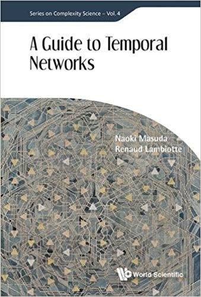

- I am Professor at
Department of Mathematics and
Institute for Artificial Intelligence and Data Science at
State University of New York at Buffalo, USA. - Information on Gradaute Courses in Mathematics at State University of New York at Buffalo, which I am writing as Graduate Studies Director These are for our current students, but it should be useful for prospective students as well.
- I am publishing all work-related news (in English) as my LinkedIn posts. 